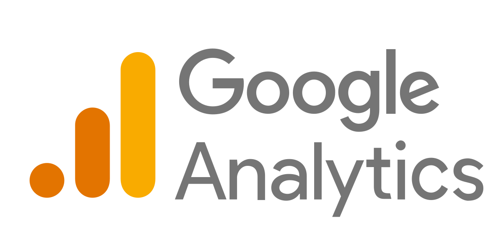
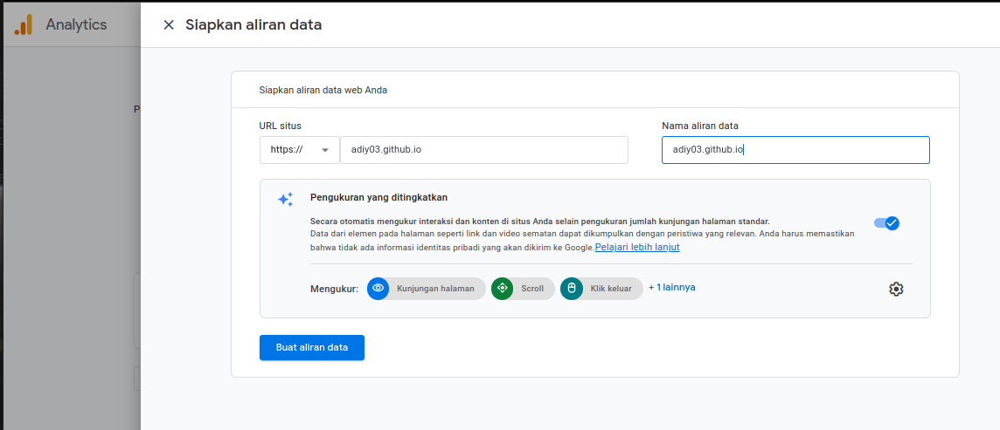

Google Analytics: Definisi, Manfaat dan cara penggunaan
Google Analytics 4 (GA4)
Google Analytics adalah layanan analitik gratis yang ditawarkan oleh Google yang memungkinkan pemilik website dan atau aplikasi untuk melacak dan menganalisa lalu lintas mengenai bagaima kebiasaan mereka saat mengunjungi sebuah situs web ataupun aplikasi
Google Analytics 4 (GA4) membantu Anda memahami cara orang menggunakan situs web atau aplikasi Anda. GA4 dapat melacak aktivitas user seperti klik, gulir, pembelian, dan tindakan lainnya
Anda dapat menggunakan GA4 untuk mendapatkan wawasan tentang perilaku pengguna, pola navigasi, dan perjalanan pelanggan
Baik Anda pemilik bisnis, analis data, profesional SEO, atau ahli strategi pemasaran digital, GA4 dapat membantu Anda lebih memahami dan kemudian melayani pengunjung Anda dengan lebih baik.
Google Analytics 4 (GA4) membantu Anda memahami cara orang menggunakan situs web atau aplikasi Anda. GA4 dapat melacak aktivitas user seperti klik, gulir, pembelian, dan tindakan lainnya
Anda dapat menggunakan GA4 untuk mendapatkan wawasan tentang perilaku pengguna, pola navigasi, dan perjalanan pelanggan
Baik Anda pemilik bisnis, analis data, profesional SEO, atau ahli strategi pemasaran digital, GA4 dapat membantu Anda lebih memahami dan kemudian melayani pengunjung Anda dengan lebih baik.
google Analytics Manfaaf
- ROI Pemasaran: Mengevaluasi efektivitas upaya pemasaran Anda dan mengalokasikan anggaran Anda lebih efisien
- Kustomisasi dan Fleksibilitas: Menyesuaikan platform agar sesuai dengan kebutuhan bisnis Anda dengan dimensi kustom, metrik, dan dasboard
- Optimalisasi Pengalaman Pengguna: Mengidentifikasi dan mengatasi masalah yang mungkin mempengaruhi keterlibatan dan kepuasan pengguna.
- Keputusan Berdasarkan Data: Menggunakan wawasan yang diperoleh dari Google Analytics untuk membuat keputusan yang tepat tentang peningkatan situs web dan strategi pemasaran.
Langkah Menggunakan google analytics 4
Langkah-langkah menggunakan Google Analytics- Pergi ke halaman Google Analytics di sini
- klik "Get started today"
- Buat Akun sesuai dengan nama website / aplikasi bisnis Anda
- Buat Properti sesuai dengan nama website / aplikasi bisnis Anda, dan isi data sesuai dengan apa yang diperlukan
- Pilih kategori dan Isi skala bisnis sesuai dengan bisnis Anda
- Centang sesuai dengan tujuan bisnis Anda
(Anda dapat memilih beberapa)
- Pilih Negara dan centang perjanjian persyaratan layanan google Analytics
- Pilih Platforn yang ingin dihubungkan dengan Google Analytics
- Isi data dan Setting pengukuran / metrik apa saja yang ingin di ukur
 - Install Google Tag Manager, Anda dapat menginstalnya secara manual (hubungi developer Anda) atau dengan menggunakan pengaturan CMS yang Anda gunakan
- Jika seudah terhubung maka Anda akan mendapatkan notifikasi pending
- Jika semuanya berjalan tanpa hambatan maka Anda akan di bawa ke halamn Beranda dan sudah dapat memanfaatkan fitur-fitur yang ada pada Google Analytics
Integrasi Google Analytics 4
Google Ads: Menghubungkan akun Google Ads Anda untuk melacak dan menganalisis kinerja kampanye iklan Anda
Google Search Console: Terhubung dengan Search Console untuk memahami bagaimana situs Anda berkinerja dalam pencarian organik
Baca juga: Google Search Console: Definisi, Manfaat Dan Tutorial
Google Search Console: Terhubung dengan Search Console untuk memahami bagaimana situs Anda berkinerja dalam pencarian organik
Baca juga: Google Search Console: Definisi, Manfaat Dan Tutorial